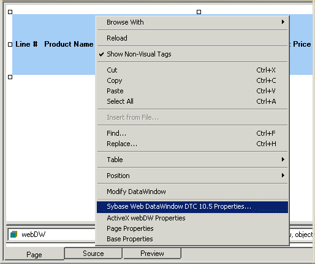
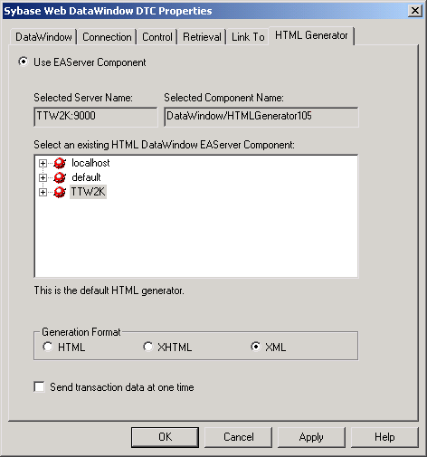

The previous section, "Designing DataWindow objects for the Web DataWindow," began on page and covered many topics about the design of DataWindow objects that are to be used as Web DataWindows. Now we look at the integrated support in PowerBuilder for creating and editing Java Server Pages (JSPs) for the Web DataWindow.
JSP pages can be written in any well-formed language, including XML, but they are usually written in HTML. In PowerBuilder, you usually create JSPs for use with Web DataWindows using the Web/JSP DataWindow Page wizard, and you edit them in much the same way as any other HTML page, using the HTML editor. In the Web/JSP DataWindow Page wizard, you specify whether you are using the Standard HTMLGenerator90 component, a custom HTMLGenerator90 component that you developed and deployed to EAServer, or a DataWindow container.
When the page is created, it contains a Web DataWindow design-time control (DTC). A Web DataWindow DTC lets you add database-driven content to Web applications.
In the Sybase Web DataWindow DTC Properties dialog box, you can specify the type of generation you want. The generation type determines the method that PowerBuilder calls in the HTMLGenerator90 component to generate an XML, XHTML, or HTML Web DataWindow.
You specify the type of generation in the DataWindow design-time control by selecting the DataWindow (JSP) in the Page tab, right-clicking the design-time control, and selecting Sybase Web DataWindow DTC 10.5 Properties:

Then in the HTML Generator tab, you select the generation format—HTML, XHTML, or XML:

For example, here the selected generation format is XML. This results in the generation of separate content (XML), layout (XSLT), and style (CSS), and a resulting transformation to XHTML. Setting the Generation Format property to XML is required for the XML Web DataWindow.
 Also specify the rows per page for the XML or XHTML
DataWindow For optimal bandwidth savings when you use XML or XHTML as
the generation format, you must also specify the rows per page in
the Control tab.
Also specify the rows per page for the XML or XHTML
DataWindow For optimal bandwidth savings when you use XML or XHTML as
the generation format, you must also specify the rows per page in
the Control tab.
For detailed information about working with JSPs and using the Web DataWindow DTC, see the Working with Web and JSP Targets book.